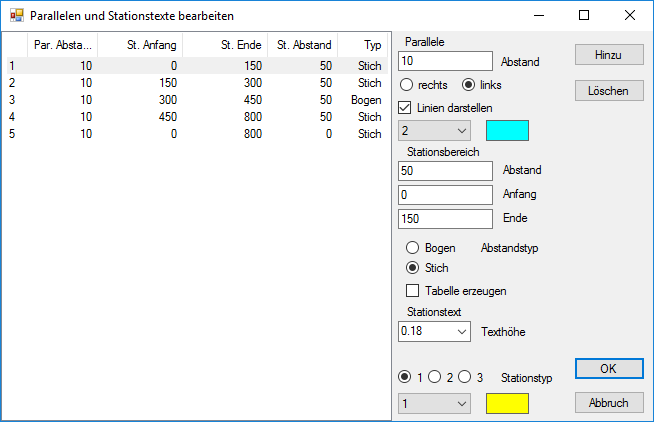
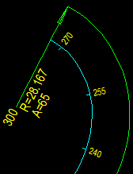
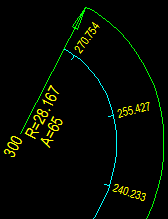

Tabelle
Listet die erzeugten Parallelen mit den definierten Abständen und dem gewählten Typ auf.
Parallele
Abstand
Abstand der Parallelen zur Bezugslinie. Abstandsangabe in Meter.
rechts; links
Auswahl der Seite, bezogen auf die Verlaufsrichtung der Bezugslinie, auf der die Parallele gezeichnet werden soll.
Linie darstellen
Wenn Sie die Parallele nicht auf der Zeichnung darstellen wollen, setzten Sie einen Haken in die Checkbox.
Stationsbereich
Abstand: Angabe des Stationierungsabstandes innerhalb des definierten Bereiches (Anfang/Ende).
Anfang: Beginn der Stationierung.
Ende: Ende der Stationierung.
Abstandstyp
Wählen Sie, ob die Teillinien der Parallelen im Bogenmaß oder Stichmaß gezeichnet werden sollen.
 |
 |
|
Bogenmaß |
Stichmaß |
|
Tabelle erzeugen
Fügt der Zeichnung eine Tabelle mit den angegebenen und berechneten Daten der Parallelen hinzu.
Stationstext Texthöhe
Angabe der Texthöhe.
Stationstyp
Darstellung der Abstandsangaben. Die Stiftnummer (Dropdown-Liste) entspricht der eingestellten Stiftnummer in ISBCAD. Wenn Sie die Zeichnung in ISBCAD auf der Zeichenfläche platzieren, werden die Elemente mit dem hier angegebenen Stift gezeichnet.
Stationstyp 1 = Stationstext
Stationstyp 2 = Stationstext + tangentialer Bezug zur Hauptachse.
Stationstyp 3 = Stationstext
OK
Übernimmt die Angaben und schließt den Dialog. Die Vorschau können Sie mittels der Funktion Ansicht aufrufen. (s. Ansicht).
Abbruch
Verwirft die Änderungen und schließt den Dialog.